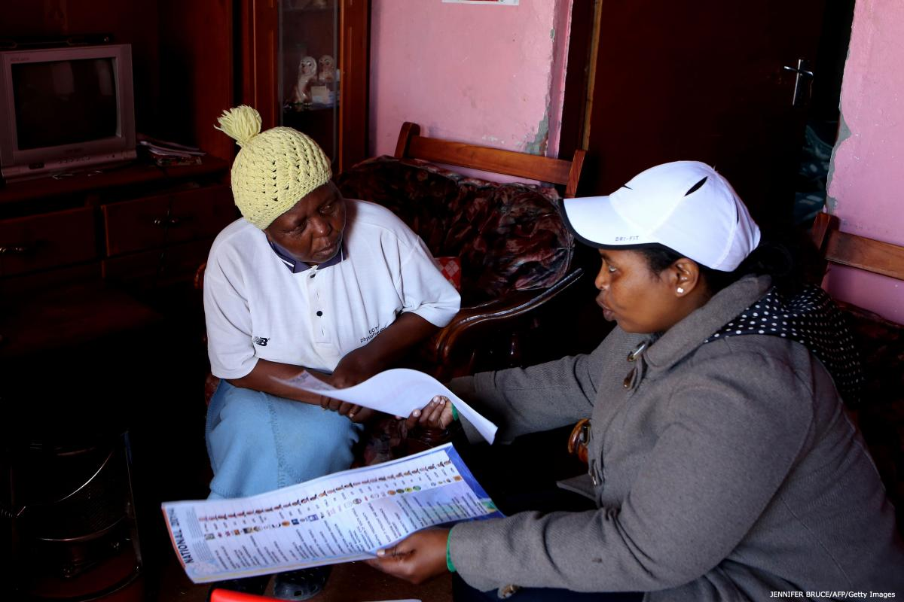

نمونههایی از رایگیری در سراسر جهان
انتخابات همواره و در همه جای جهان داری نقایص و مشکلاتی است که حتی در پیشرفتهترین دموکراسیها هم نمیتوان بدون گزارش هیچ مشکلی روز رایگیری را سپری کرد. این متن نمونههایی از رایگیریهای گذشته در چند کشور را روایت میکند و مشکلات عملی روز رایگیری را در واقعیت نشان میدهد. این روایتها از زبان ناظران انتخاباتی و کارکنان کمیسیون انتخابات نقل شده که برای نظارت انتخابات مورد نظر به محل رایگیری رفته بودند.

روایتی از رأیگیری در جمهوری دموکراتیک کنگو
در جمهوری دموکراتیک کنگو در انتخابات مجلس سال ۲۰۰۶ تعرفههای رأی در شهرهای بزرگ بعضا تا شش صفحه به اندازه A1 بود؛ تا حدی که برخی ناظران میگفتند که اندازه این تعرفهها را میتوان در کتاب رکوردهای گینس ثبت کرد! نام نامزدها در سه یا چهار ستون مختلف، همراه شماره، عکس، لوگو و نام حزب درج شده بود. در بعضی شعب اخذ رأی مأمور برگزاری انتخابات از رأیدهندگان میپرسید که نام نامزد مورد نظرشان در کدام صفحه است تا تنها یکی از چهار یا شش صفحه تعرفه رأی را به آنها بدهد. مسلما خیلی از رأیدهندگان نمیدانستند نام نامزد مورد نظرشان در کدام صفحه است، و تنها نام – یا حداکثر شماره – او را میدانستند. مسئول مورد نظر سپس صفحه مربوط را جدا میکرد و به رأیدهندگان میداد، و بعد آنها را به سمت محل انداختن رأی هدایت میکرد. به نظر میرسد در اکثر موارد این کار با حسن نیت و با هدف آسانتر کردن کار رأیدهندگان انجام شده باشد، اما مسلم است که این تعرفهها در پایان کار باید جزء آرای باطله منظور میشدند.
داستانی از رأیگیری در جمهوری دومینیکن
در قانون انتخابات جمهوری دومینیکن ساز و کار منحصر به فردی برای رأی دادن وجود دارد. در این کشور شعب اخذ رأی در دو نوبت کار میکنند. شیفت اول از ۶ صبح تا ۱ بعد از ظهر است و در آن تنها زنان رأی میدهند. شیفت دوم مختص آقایان است و از ساعت ۱ تا ۶ بعد از ظهر ادامه دارد. در ابتدای هر شیفت رأیدهندگان ثبت نام میشوند. در این مرحله کلیه رأیدهندگانی که مایلند در شعبه مورد نظر رأی بدهند، باید شخصا در محل حضور پیدا کنند و کارت شناسایی انتخاباتی خود را ارائه دهند تا نامشان در فهرست رأیدهندگان آن روز ثبت شود. بعد از اتمام کار ثبت نام، فرآیند رأیگیری آغاز میشود. رأیدهندگانی که پس از پایان مهلت ثبت نام به شعبه اخذ رأی بیایند حق رأی دادن نخواهند داشت.
نمونهای از تخلف انتخاباتی در جمهوری دومینیکن
در جمهوری دومینیکن مطابق قانون اگر در موقع شمارش آرا - که در خود شعبه اخذ رأی انجام میشود - معلوم شود که شمار تعرفهها از شمار رأیدهندگان بیشتر است، تعرفهها دوباره به صندوق بازگردانده میشوند، و به طور تصادفی به تعداد اختلاف میان این دو رقم رأی از صندوق خارج میشود. سپس رأیهای اضافی خارج شده سوزانده میشوند تا مجموع تعرفهها با شمار رأیدهندگان برابر شود. بعد از این کار شمارش آراء احزاب و نامزدها شروع میشود. این فرآیند به طور مکتوب در قوانین انتخاباتی قید شده، و میتواند دلیلی برای ابطال آرا باشد.
داستانی درباره ناظران انتخاباتی در فیجی
در انتخابات سراسری سال ۲۰۰۵ فیجی فضای کشور بر سر اختلافات نژادی به شدت دوقطبی شده بود. هندیتبارها به حزب کارگر فیجی رأی میدادند و بومیان فیجی طرفدار حزب فیجی متحد (SDL) بودند. در موقع شمارش آرا روشن بود که مسئولان شمارش عمدتا از بومیان فیجی هستند. در ستاد مرکزی ۲۸ اتاق شمارش آرا وجود داشت، و نتایج صندوقها بهمحض معلوم شدن از طریق یک سیستم صوتی در سرتاسر محل شمارش آرا اعلام میشد. یک ناظر بینالمللی در اتاق شمارش آرا از رئیس گروه پرسید: «چرا هر بار که یکی از نامزدهای حزب متحد فیجی برنده اعلام میشود، در اتاقهای شمارش آرا صدای دست زدن و خوشحالی میآید، و هر بار که یک کرسی به حزب کارگر میرسد، سکوت محض حاکم میشود؟ مگر قرار نیست شما مستقل و بیطرف باشید؟» رئیس تیم با لبخند جواب داد: «نه دوست عزیز، این مسئله هیچ ربطی به نتایج اعلام شده ندارد. فرآیند شمارش آرا بسیار خستهکننده است و در بسیاری از موارد اعتراضاتی وجود دارد و به بازشماری آرا نیاز است. دست زدن اعضای گروه نشاندهنده این است که یکی از گروهها بالاخره کار شمارش آرا در یک حوزه انتخابیه را به پایان رسانده، و میتواند پی کارش برود. ما فقط از اینکه یکی از گروهها کارش را تمام کرده خوشحال هستیم.» در حالی که ناظر انتخاباتی مشغول یادداشت کردن این جواب بود و خودش را برای پرسیدن سوال بعدی آماده میکرد، رئیس تیم شمارش پنهانی راهش را از میان مردم باز کرد و ناپدید شد.
ماجرایی درباره قابل دسترسی بودن فرآیند انتخابات در استرالیا برای عموم
در انتخابات فدرال سال ۲۰۰۴ من به شعبه اخذ رأی نزدیک محل زندگیام رفتم، اما متوجه شدم که صفحههای نمایش مخصوص کسانی که روی صندلی چرخدار مینشینند، در آنجا نصب نشده است. وقتی از مسئول شعبه در این مورد سوال کردم، در جوابم گفت که فکر نمیکرده هیچ معلولی به این شعبه بیاید و نمیدانسته که چگونه باید این صفحههای مخصوص را نصب کند. او همچنین به من گفت که خودم باید فکری به حال مشکلم بکنم. او هنوز متوجه نشده بود که من در کمیسیون انتخاباتی کار میکنم، و در ارزیابی طراحی صفحههای ویژه رأیدهندگان سوار بر ویلچر نقش داشتهام. به مسئول شعبه گفتم که تا موقعی که صفحه مخصوص را نصب نکند، در این شعبه رأی نخواهم داد، چرا که مطابق تصمیم کمیسیون انتخاباتی، همه شعبههایی که با ویلچر قابل دسترسی هستند، باید صفحه ویژه رأیدهندگان سوار بر ویلچر هم داشته باشند. نصب صفحه ویژه حدود یک ساعت وقت مسئول شعبه را گرفت، چون نمیخواست دستورالعمل نصب را بگیرد. اما ارزشش را داشت، چون او از همان ابتدا باید این کار را میکرد. موقعی که از شعبه اخذ رأی خارج شدم، دو نفر دیگر را دیدم که سوار بر ویلچر منتظر رأی دادن بودند.
شمارش آرا در سال ۲۰۰۱ – انتخابات مجلس شورا در تیمور شرقی
در آن سال روش مورد استفاده برای شمارش آرا بسیار دست و پا گیربود و فکر نمیکنم هنوز هم در تیمور شرقی مورد استفاده باشد. شمارش آرا در مرکز انجام میشد و شعبههای اخذ رأی در آن هیچ دخالتی نداشتند. در هر بخش یا حوزه همه تعرفهها در محلی در مرکز حوزه جمع میشد و پس از آن کار شمارش آغاز میشد.
فرآیند شمارش آرا مراحل متعددی داشت و رعایت دقیق آنها کار سختی بود. هشت مرحله شمارش تعرفهها عبارت بودند از:
تلفیق تعرفهها به تعرفههای صادره، تعرفههای استفاده شده، تعرفههای ناقص، تعرفههای باطله و تعرفههای معتبر
ادغام تعرفهها
ترکیب تعرفهها
دستهبندی و تقسیم تعرفهها به دستههای ۵۰ تایی
شمارش آرا، یعنی اختصاص تعرفههای رأی به نامزدها بر اساس آراء رأیدهندگان
لحاظ کردن آرای باطله
اعلام نام برنده حوزه و انتقال نتایج ملی به ستاد مرکزی انتخابات در شهر دلی (پایتخت تیمور شرقی)، با توجه به اینکه در این انتخابات از سیستم نمایندگی تناسبی ترکیبی استفاده شد
دادن رونوشتی از نتایج اعلامشده به ناظران.
این فرآیند باید اصلاح و سادهتر شود.
منبع: دورههای آموزشی بریج